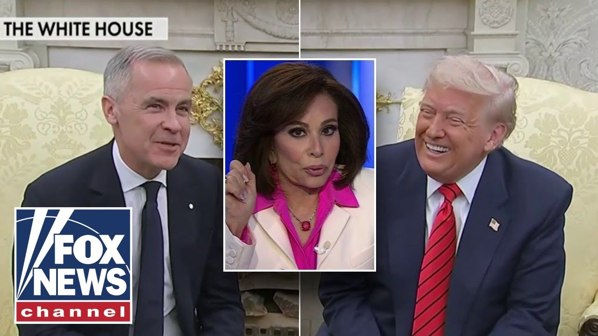

来B站一起耍【Global每日英语简报】
【特朗普对加拿大“闻到了血腥味”：珍宁法官】
Summary: President Trump and Canada's new prime minister Mark Carney met at the White House, showing better rapport than with previous leaders, discussing trade and partnership opportunities while Trump emphasized Canada's reliance on the U.S. market and potential political divisions within Canada.
摘要： 特朗普总统与加拿大新任总理马克·卡尼在白宫会晤，展现出比前任更好的默契，讨论贸易和合作机会，同时特朗普强调加拿大对美国市场的依赖以及加拿大内部潜在的政治分歧。

⏱️ Estimated Reading Time: 8 min
President Trump and Canada's new prime minister Mark Carney meeting at the White House.
特朗普总统与加拿大新任总理马克·卡尼在白宫会晤。
And unlike their last blackface love and soy boy, 47 clicked with fellow businessman Carney, drizzling a little maple syrup while asking for the keys to the kingdom.
与之前那位涂黑脸的“豆奶男孩”不同，47岁的他与同为商人的卡尼一拍即合，一边浇点枫糖浆，一边索要王国的钥匙。
A few days ago, he won a very big election in Canada.
几天前，他在加拿大赢得了一场非常重要的选举。
And uh I think I was probably the greatest thing that happened to him, but I can't take both credit.
呃，我想我可能是他遇到的最棒的事，但我不能全揽功劳。
Canada chose a very talented person, a very good person.
加拿大选择了一个非常有才华、非常好的人。
I have a lot of respect for this man.
我非常尊重这个人。
I'm a real estate developer at heart.
我骨子里是个房地产开发商。
When you get rid of that artificially drawn line, somebody drew that line many years ago.
当你抹去那条人为划定的界线——那条多年前被人画下的线。
When you look at that beautiful formation, when it's together, there are some places that uh are never for sale.
当你看着那片美丽的版图，当它完整时，有些地方是永远不会出售的。
That's true.
确实如此。
Uh we're sitting in one right now.
呃，我们现在就坐在其中一个地方。
You know, Buckingham Palace that you visited as well.
你知道，你也参观过的白金汉宫。
It's not for sale.
它不出售。
Won't be for sale uh ever.
永远不会出售。
Uh but the opportunity is in the partnership.
呃，但机会在于合作。
But I say never say never.
但我从不说“绝不”。
But don't get any ideas that President Trump has softened his trade stance.
但别以为特朗普总统的贸易立场软化了。
Think of us as a super luxury store.
把我们想象成一家超级奢侈品店。
A store that has the goods.
一家货真价实的店。
You're going to come and you're going to pay a price and we're going to give you a very good price.
你会来，你会付钱，而我们会给你一个非常优惠的价格。
We could sign 25 deals right now, Howard, if we want it.
霍华德，如果我们愿意，现在就能签25份协议。
We don't have to sign deal.
我们不必签协议。
They have to sign deals with us.
是他们必须和我们签协议。
They want a piece of our market.
他们想要我们市场的一部分。
We don't want a piece of their market.
我们不想要他们的市场。
We've been ripped off by everybody for 50 years.
50年来，我们一直被所有人占便宜。
For 50 years.
整整50年。
and we're just not going to do that anymore.
而我们不会再这样下去了。
So, Judge, he's basically his strategy is always to direct attention urgently to a matter, in this case, trade fairness, under the assumption that leaders will always just wait out a president.
所以，法官，他的策略基本上总是紧急引导注意力到某个问题上，这次是贸易公平，前提是其他领导人总会等总统下台。
How do you think this went?
你觉得这次会面如何？
I have a totally different take.
我有完全不同的看法。
Mhm.
嗯。
I've been thinking about this and you know we are the biggest consumer and uh apparently Canada relies on us to sell 75% of it of his its exports uh and a third of its imports are from us.
我一直在想这个问题，你知道我们是最大的消费者，呃，显然加拿大75%的出口依赖我们销售，呃，而它三分之一的进口来自我们。
But Donald Trump is the ultimate dealmaker and nothing comes out of his mouth that isn't connected at some point uh toward to a deal.
但唐纳德·特朗普是终极交易高手，他说的每句话最终都会指向一笔交易。
And I think that Donald, President Trump is sensing weakness and I think he smells blood.
我认为唐纳德·特朗普总统察觉到了弱点，闻到了血腥味。
Recently there has been an attempt by a few of the provinces in Canada to secede.
最近加拿大有几个省试图独立。
The provinces that want to succeed are Alberta, Quebec, uh and I think there's another one.
想要独立的省份是阿尔伯塔、魁北克，呃，我想还有一个。
These are the most uh the largest oil producers in Canada.
这些是加拿大最大的石油生产地。
So if there is a sense in Canada that you know the people aren't happy, the provinces uh that have talked about seceding are saying that the Canadian federal government is not concerned about them.
所以如果加拿大国内感觉民众不满，那些讨论独立的省份会说加拿大联邦政府不关心他们。
It may be that Trump is sensing this and he's going to target them and that all of this is just kind of, you know, like another discussion, but it's really about those places that want to succeed.
可能是特朗普察觉到了这点，他会瞄准它们，而这一切看似是另一场讨论，但实际上关乎那些想独立的地区。
Never heard that, did you, Jessica?
从没听过这个吧，杰西卡？
Oh, I said it a couple months ago, but that's okay.
哦，我几个月前说过，不过没关系。
Okay. Really?
好吧。真的吗？
No, I think we want Alberta because they're the powerhouse.
不，我觉得我们想要阿尔伯塔，因为他们是能源重镇。
They have all the oil, as the judge said.
如法官所说，他们有所有石油。
They have all the minerals.
他们有所有矿产。
We don't want Quebec.
我们不想要魁北克。
They're just a bunch of old liberals.
他们就是一帮老自由派。
They're also conservative in Alberta.
阿尔伯塔也很保守。
So, it's not a great beautiful line like what you'd see would just kind of look like a big Florida that would shoot up north, but it would give us access to the Arctic.
所以，它不会形成一条漂亮的线，看起来更像一个向北延伸的大佛罗里达，但会让我们进入北极。
They are there's going to be a referendum.
他们将会举行公投。
I don't know if it's going to be possible, but I like how he's using the leverage.
我不知道是否可行，但我喜欢他利用这种筹码的方式。
If these people want to go, just use that as like a little pressure point to exploit them for concessions because he's right.
如果这些人想走，就把它当作施压点来换取让步，因为他是对的。
It is a huge department store.
这是一家巨型百货商店。
Pay them a premium to get into our country.
付溢价进入我们国家。
Put your product on the shelf and we'll buy it.
把你的产品放上货架，我们会买。
They need us more than we need them.
他们比我们更需要他们。
And that's what Trump has been saying this whole time.
这就是特朗普一直说的。
He needs to strike a little chemistry with this president.
他需要和这位总统建立一点默契。
We don't need a Zalinski.
我们不需要一个泽连斯基式的会面。
People were saying this was going to be a Zalinsky meeting.
人们说这会是一场泽连斯基式的会面。
It wasn't.
并不是。
It was quite lovely, quite diplomatic.
这次会面很愉快，很外交。
And I think people need to get used to the fact that Trump is diplomatic.
我认为人们需要习惯特朗普也有外交手腕的事实。
Maybe not on Truth Social, but when he's face to face, he's good.
也许在Truth Social上不是，但面对面时他很擅长。
So, he's asking, "What do you have to offer Canada? Are we going to get a mineral deal? Are you going to help with border security?"
所以他在问：“你能给加拿大什么？我们能达成矿产协议吗？你会协助边境安全吗？”
Uh, that's what this is all about.
呃，这就是重点。
What are we going to get out of this?
我们能从中得到什么？
And I think you're seeing a little bit of progress.
我认为你看到了一点进展。
And this guy, best thing he has going for him, he's not Trudeau.
而这个人最大的优势是他不是特鲁多。
Yeah.
是的。
He's not a a nepotistic wonder, you know, with the famous Click here to subscribe to the Fox News YouTube page to catch our hottest interviews and most compelling analysis.
他不是靠裙带关系的奇迹，你知道的。点击此处订阅福克斯新闻YouTube频道，获取最热门访谈和最犀利分析。
You won't get it anywhere else.
别处看不到这些内容。